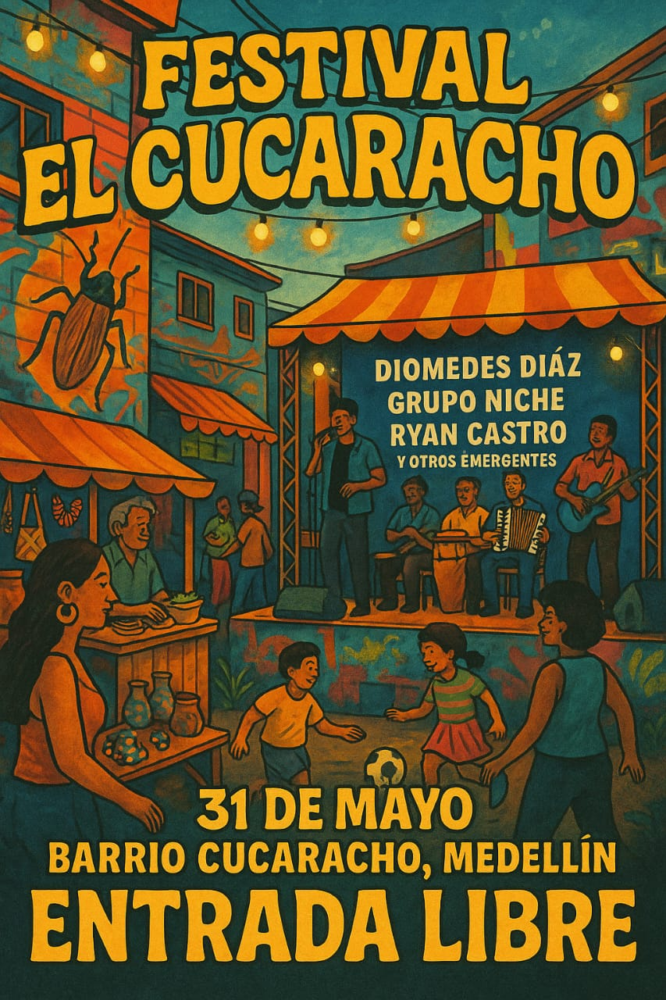

Festival El Cucaracho

Presentación General: Festival el Cucaracho
El Festival El Cucaracho nace como una iniciativa para fortalecer los lazos comunitarios, resaltar el talento local y celebrar la diversidad cultural del Barrio Cucaracho, en Medellín. Más allá de un evento musical, el festival busca ser un espacio de encuentro, inclusión y disfrute para todas las edades, promoviendo el arte, la gastronomía, el emprendimiento y el juego como motores de transformació barrial.
A diferencia de otros festivales, El Cucaracho mezcla la esencia barrial con una vibra urbana y moderna, inspirada en grandes eventos como Estéreo Picnic, pero con sabor local. Aquí se cruzan ritmos como el vallenato, la salsa y el reguetón con la alegría de los vecinos, los sabores de nuestras cocineras y la creatividad de nuestros artesanos.
Fecha y Lugar:
- 📅 31 de mayo de 20225
- 📍 Barrio Cucaracho, Medellín|
¿Qué encontrarás?:
- 🎤 Conciertos con artistas locales y emergentes: Diomedes Díaz, Grupo Niche, Ryan Castro y muchos más.
- 🍽 Feria gastronómica con comidas típicas.
- 🛍 Muestra de emprendimientos y artesanías.
- 🎯 Juegos para niños y actividades familiares.
- 🎨 Arte urbano, color y comunidad.
Entrada libre y para todos.
¡Trae tu energía , tu familia y tus ganas de pasarla bien!